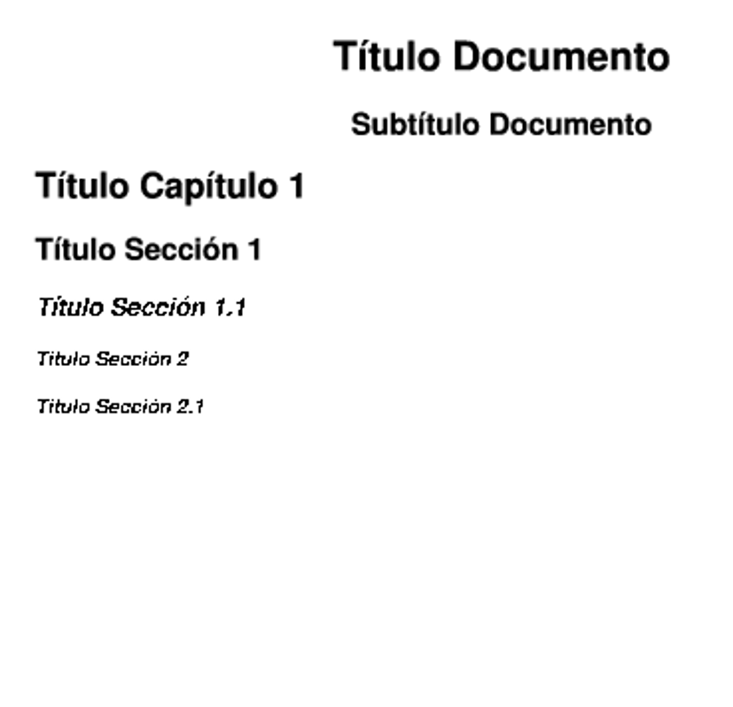
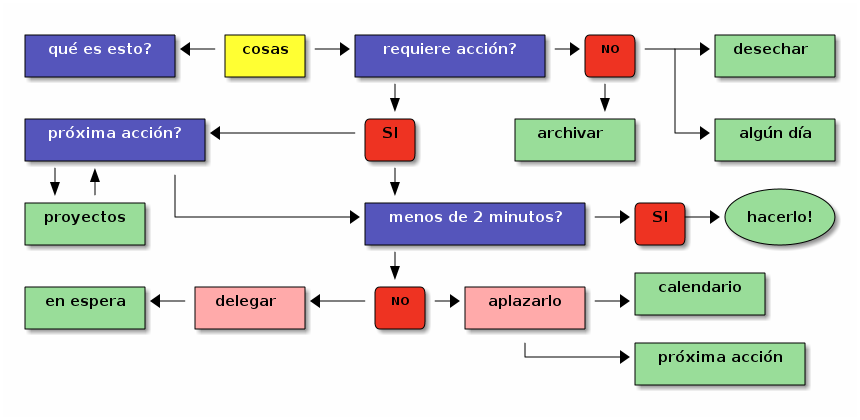
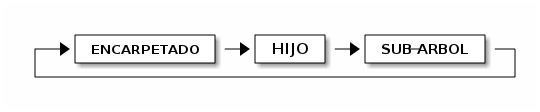
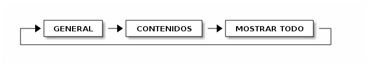

TODO TXT | rst + org-mode
index | OSiUX | blog | docs | charlas | rss
_ _ _ _
| |_ ___ __| | ___ | |_ __ __ | |_
| __| / _ \ / _` | / _ \ | __| \ \/ / | __|
| |_ | (_) | | (_| | | (_) | | |_ > < | |_
\__| \___/ \__,_| \___/ \__| /_/\_\ \__|
_ _
_ __ ___| |_ _ ___ _ __ __ _ _ __ ___ ___ __| | ___
| '__/ __| __| _| |_ / _ \| '__/ _` |____| '_ ` _ \ / _ \ / _` |/ _ \
| | \__ \ |_ |_ _| | (_) | | | (_| |____| | | | | | (_) | (_| | __/
|_| |___/\__| |_| \___/|_| \__, | |_| |_| |_|\___/ \__,_|\___|
|___/
Introducción
Sobre el Autor
Osiris Alejandro Gómez, es Programador y Administrador GNU/Linux. Socio de gcoop 1 Cooperativa de Software Libre y miembro del grupo de organización de BAL 2 (Buenos Aires Libre), además colabora en USLA 3 (Usuarios de Software Libre de Argentina) y CaFeLUG 4 (Grupo de Usuarios GNU/Linux de la Capital Federal).
Porqué usar TXT?
- único formato multiplataforma.
- se puede leer y editar siempre.
- automatizar la creación/modificación.
- es versionable (git, svn, mercurial, etc).
- ocupa muy poco espacio (muy comprimible).
- no está atado a un software.
- podés usar cualquier editor de texto.
- exportable a cualquier formato.
{kind=link}
Editores de Texto
{kind=link}
Vim
{kind=link}
- Vi IMproved es una versión mejorada del
vipor Bill Joy 7 en 1976. - Desarrollado por Bram Moolenaar 8 en 1991.
viestá disponible en todos los sistemas UNIX.- Se pueden realizar operaciones muy complejas en muy pocos pasos.
- La gran mayoría de los comandos son de una sola tecla.
- Posee modos de Visualización, Inserción y Comando.
- Hay muchas aplicaciones que usan la misma cominación de teclas.
Leer y Editar Archivos
:w [archivo] |
Guarda los cambios del archivo actual |
:wq |
Sale guardando los cambios del archivo actual cambios |
:q! |
Sale del editor sin guardar cambios |
:q |
evita perder modificaciones |
:e archivo |
Edita el archivo indicado |
:r archivo |
Lee el contenido del archivo y lo escribe en el buffer actual |
gf |
Abre el archivo bajo el cursor (usar CTRL-o para regresar) |
CTRL+] |
Da un salto a donde se define el símbolo debajo del cursor (*) |
CTRL+t |
Regresa al archivo anterior luego de hacer un salto (*) |
- Usar
ctagspara que funcione correctamente, al menos en PHP, C y python.
Modo Inserción
i |
Ingresa a izquierda del caracter actual |
I |
Ingresa al principio de la linea |
a |
Ingresa a derecha del caracter actual |
A |
Ingresa al final de la linea |
o |
Inserta un linea debajo de la actual |
O |
Inserta una linea arriba de la actual |
Movimientos
H, L |
Izquierda, Derecha |
J, K |
Abajo, Arriba |
CTRL-d |
Avaza media pantalla |
CTRL-u |
Retrocede media pantalla |
w, W |
Avanza de a palabras, W hace saltos mas largos |
b, B |
Como w, W en sentido inverso |
e, E |
Como w, W coloca el cursor a la derecha de la palabra |
0, $ |
Principio y final de la linea actual |
gg, G |
Ir al principio o final del archivo |
:nro |
Se dirige directamente al número de línea indicado |
Borrar y Deshacer
D, d$ |
Borra todos los caracteres hasta el final de la linea |
x |
Elimina el caracter bajo el cursor delete |
X |
Elimina el caracter bajo el cursor backpace |
dd |
Elimina la linea actual |
d{5w} |
Borra 5 palabras hacia la derecha |
u |
Deshacer el último cambio |
CTRL-R |
Rehacer |
U |
Deshacer todos los cambios de la linea actual |
Búsquedas
Opciones para habilitar búsquedas inmediatas y subrayado de resultado:
:set incsearch :set ignorecase smartcase :set hlsearch
/{patrón}, ?{patrón}
Inicia la búsqueda de la expresión regular {patrón}. Con / es una búsqueda hacia abajo y ? hacia abajo.
n, N
Para avanzar o retroceder en los resultados de la búsqueda.
vimgrep /{patrón}/ *
Busca la expresión regular en todos los archivos del directorio
actual. Otra variante es utilizar * para iniciar una
búsqueda recursiva o *.php para restringir la búsqueda
solamente a un tipo de archivo.
Buscar y Reemplazar
:{rango}s/{a_buscar}/{reemplazo}/g
Reemplaza todas las apariciones de {a_buscar} por {reemplazo} en el sector indicado por {rango}. Si omite {rango} se actúa solamente en la linea actual, si coloca % como {rango} se reemplaza en todo el archivo. También puede invocar el reemplazo desde el modo visual (iniciado con v) para actuar solamente en la porción definida.
Copiar y pegar
y{3w} |
Copia (yank) copia 3 palabras |
y$ |
Copia hasta hasta el final de linea |
yy |
Copia la linea completa |
p, P |
Pega el texto debajo o arriba de la linea actual |
ddp |
Invierte dos líneas |
Otros modos de selección
v |
Define una zona de selección |
CTRL-v |
Similar al anterior pero en bloque |
SHIFT-v |
Útil para seleccionar lineas de texto completas |
Autocompletado
CTRL-x CTRL-p, CTRL-x CTRL-n
Sugiere palabras similares a la actual buscando hacia arriba o abajo. Funciona en cualquier tipo de archivo.
CTRL-x CTRL-f
Autocompleta nombres de archivos.
CTRL-x CTRL-o
Sugiere términos en base a la sintaxis del archivo actual. Por ejemplo si edita un archivo .html sugiere elementos de HTML y reconoce el contexto. En archivos .py inspecciona objetos de python, o en archivos .css sugiere elementos, propiedades y valores. En otros lenguajes como C hay que usar el comando externo ctags para que funcione. Igual es groso…
CTRL-x CTRL-k
Autocompleta consultando un diccionario personalizado. Usar algo como :set dictionary=palabras.txt para definir el diccionario.
Ventanas y Tabs
:split |
Divide la ventana horizontalmente |
:vsplit |
Similar al anterior pero verticalmente |
:Explore |
Abre un navegador de archivos |
CTRL-w |
Alterna entre ventanas |
:tabNew |
Crea un nuevo tab |
:tabNext |
Alterna entre tabs |
Integración con bash
:!comando |
Ejecuta el comando y muestra la salida en pantalla |
:r !comando |
Ejecuta el comando e inserta la salida de pantalla |
| Por ejemplo :r !cal inserta el calendario del mes actual | |
:shell |
Inicia un proceso bash, utilice exit para regresar |
Atajos y macros
:map <F5> :r !date<CR>
Asigna una operación a la pulsación de una tecla. En este caso cuando se pulse la tecla F5 se ha va escribir la hora actual en el documento. El comando imap es similar pero funciona en modo insersión.
:abbr ,e micorreo@gcoop.coop
Genera una abreviatura que se expande automáticamente. En ese ejemplo al escribir *,e* VIM escribirá una dirección de correo completa.
qa
Guarda en un registro (*"a"* en este caso) todas las operaciones que realice. Tiene que pulsar la tecla q para terminar la grabación.
@a
Repite las operaciones que ha guardado en el registro a. Puede usar un número antes de @ para repetir la acción muchas veces.
Corrector ortográfico
:set spell spelllang=es |
Habilita el corrector en español |
=z |
Muestra sugerencias de corrección |
zg |
Agrega en el diccionario la palabra |
]s, [s |
Avanza o retrocede palabras incorrectas |
Otros
. |
Repite el último cambio |
SHIFT-j |
Une la linea actual con la siguente, elimina el salto de linea |
gqap |
Aplica formato a todo el párrafo |
:set wildmenu |
Visor de autocompletado en la barra de comandos |
:colorscheme |
Alterna el tema de colores actual |
:set paste |
Habilita pegar texto desde aplicaciones externas |
:X |
Solicita una contraseña para cifrar el contenido de un archivo |
% |
Busca el complemento del paréntesis, llave o corchete bajo el cursor |
* |
Va al primer caracter de la siguiente linea |
re-StructuredText
Instalación
apt-get install python-docutils
Generar HTML/Slides/Latex/PDF
rst2html presentacion.txt >presentacion.html rst2s5 presentacion.txt >presentacion.html rst2latex presentacion.txt presentacion.tex rst2pdf presentacion.txt -o presentacion.pdf
Sintaxis
Es extremandamente simple, prácticamente es un texto plano con algunas convenciones.
Resaltado y Listas
normal, *italica*
**negrita**, ``código``
\*evitar italica*
a. item a
* item dos
- item tres
- tres uno
4. cuatro
4.1. cuatro uno
#. cinco
#. seis
================ titulo documento ================ ----------------------- subtitulo del documento ----------------------- título capítulo 1 ================= título sección 1 ---------------- título sección 1.1 `````````````````` título subsección 2 ~~~~~~~~~~~~~~~~~~~

Tablas
========== =========== columna 1 columna 2 ========== =========== fila 1 celda fila 2 celda ========== =========== +-----------+-------------+ | columna 1 | columna 2 | +===========+=============+ | fila 1 | *italica* | +-----------+-------------+ | segunda | osiux_ | | fila | | +-----------+-------------+ | fila 3 | **negrita** | +-----------+-------------+ | fila 4 | - item a | | | - item b | +-----------+-------------+ | ``codigo de ejemplo`` | | ``en una tabla`` | +-----------+-------------+
Links
`enlace uno`_ enlace dos http://osiux.com enlace tres_ `enlace cuatro`_ `enlace seis <http://osiux.com.ar>`_ `enlace siete <mailto:noreply@osiux.com>`_ |osiux|_ .. _enlace uno: http://vim.org .. _tres: http://vim.org .. _enlace cuatro: `enlace cinco`_ .. _enlace cinco: http:://osiux.com .. |osiux| replace:: re-StructuredText .. _osiux: http://osiux.com.ar
Referencias
Que ganas de tomar un fernet [1]_ aunque una caipiroska [#]_ no vendría mal igual nunca está demás una stella [#stella]_ para el verano es bueno el clericó [#clerico]_ y la sangría [#sangria]_. .. [1] también conocido como *Branca* .. [#] la suma de vodka + caipiriña .. [#stella] esta mejor que la quilmes .. [#clerico] o como ponerle onda a una ensalada de frutas .. [#sangria] limón y azucar para levantar un tetra
Imágenes
.. image:: img/no-soy-un-pirata.jpg :width: 6cm :height: 6cm :alt: no soy un pirata, compartir es bueno :align: center :target: http://buenosaireslibre.org
Reemplazar
* Attribution |BY| * Attribution-Share Alike |BY| |SA| * Attribution-No Derivative Works |BY| |ND| * Attribution-Noncommercial |BY| |NC| * Attribution-Noncommercial-No Derivative Works |BY| |NC| |ND| * Attribution-Noncommercial-Share |BY| |NC| |SA| .. |BY| image:: img/CC-BY.png .. |SA| image:: img/CC-SA.png .. |ND| image:: img/CC-ND.png .. |NC| image:: img/CC-NC.png
Código
.. code-block:: php
<?php
$x="Hola Mundo";
echo $x;
?>
.. code-block:: python
def p(x)::
print('Hola ' + x)
p('Mundo');
Aplicaciones
Wordpress
Drupal
Vim
Para obtener el coloreo de la sintaxis sólo es necesario incluir al principio del documento la siguiente línea:
.. -*- mode: rst -*-
MoinMoin
MoinMoin parsea reST con sólo incluir #!rst entre triples llaves.
{{{#!rst
Texto *reST*
}}}
Python
Sphinx genera la documentación oficial de python usando reST.
reST se utiliza para la creación de los PEPs (Python Enhancement Proposals).
EpyDoc genera documentación para Python y soporta reST.
rst2a
Un interesante servicio web que al pasarle una url de un texto escrito en reST puede devolver el contenido en formato HTML o PDF eligiendo diferentes templates, esto evita tener instalado reST.
vim-outliner
vim-outliner
[_] 66% calcula porcentaje tarea completada
[X] item 1
[_] item 2
[X] 100% item 3
[X] item 3.1
[X] item 3.2
[X] comandos checkbox
: ,,cb inserta un checkbox
: ,,cx cambia el estado del checkbox
: ,,cd elimina checkbox
: ,,cp crea checkbox con porcentaje
: ,,cz recalcula porcentaje
[_] niveles
: ,,0 nivel 1
: ,,1 nivel 2
: ,,9 ultimo
[_] fechas
: ,,d inserta el día
: ,,t inserta la hora
Gething This Done
Es un método de gestión de las actividades y el título de un libro de David Allen 9, libro que en español se ha editado con el título Organízate con eficacia 10.
GTD se basa en el principio de que una persona necesita borrar de su mente todas las tareas que tiene pendientes guardándolas en un lugar específico. De este modo, se libera a la mente del trabajo de recordar todo lo que hay que hacer, y se puede concentrar en la efectiva realización de aquellas tareas.
A diferencia de otros expertos en gestión del tiempo, Allen no se centra en el establecimiento de prioridades. En su lugar, él insta a la creación de listas de tareas específicas para cada contexto, por ejemplo, una lista de llamadas telefónicas pendientes o recados que hacer en la ciudad. También sugiere que cualquier nueva tarea que pueda ser completada en menos de dos minutos debería ser hecha inmediatamente.
Workflow

Recopilar
Capturar todo en INBOX y seguir trabajando
- Ideas
- Tareas
- Recordatorios
- Cosas por hacer en general
Utilizar una herramienta de captura ágil
Capturar… y olvidarse de momento
Aplicar regla de los 2 minutos
Procesar
Procesar por completo el INBOX
Si requiere actuar
Delegar a alguien
- Asignar a carpeta (sólo si depende de mi)
No requiere actuar
- Eliminar
- Archivar
Procesar de manera ágil, tomar decisiones rápidas
Aislarse de las distracciones
Aplicar regla de los 2 minutos
Organizar
Asignar acciones a una carpeta
- PRÓXIMO, a realizar en un lapso de tiempo corto
- PROYECTO, cosas a realizar dentro de un proyecto
- EN ESPERA, depende de otra persona
- ALGÚN DÍA, no tiene prioridad temporal
Revisar
- Fijar un momento para la revisión
- Revisión ágil y diligente
- Localizar y cuidar las tareas clave
- Las acciones cambian de carpeta
Emacs

- Emacs es un editor de texto desarrollado por Richard Stallman 11
- Es un intérprete LISP, los comandos pueden ser modificados.
- Es muy poderoso y algo dificil al principio.
- Está disponible para consola y para X.
Convención de Teclas
C-g |
Mantener pulsada Ctrl, presionar g y soltar Ctrl |
C-x C-s |
Mantener pulsada Ctrl, presionar x, presionar s, soltar Ctrl |
C-x f |
Mantener pulsada Ctrl, presionar x, presionar f |
M-q |
Mantener pulsada Meta (Esc o Alt), presionar q, soltar Meta |
Rectángulos
C-SPACE |
Marcar una region |
C-x r t |
Reemplaza un rectangulo con caracter |
C-x r d |
Borrar un rectangulo |
C-x r o |
Inserta un rectangulo en blanco |
C-x r c |
Reemplaza un rectangulo con espacios |
Buffers
C-x C-f |
Buscar un archivo |
C-x C-k |
Cerrar un buffer |
C-x C-s |
Guardar buffer en un archivo |
C-x C-w |
Guardar buffer en un archivo distinto |
M-< |
Ir al principio del buffer |
M-> |
Ir al final del buffer |
C-x C-b |
Listar buffers abiertos |
C-x b |
Cambiar de buffer |
Movimiento
M-v |
Retroceder página |
C-f |
Avanza un caracter |
C-b |
Retrocede un caracter |
C-p |
Línea anterior |
C-n |
Siguiente línea |
M-f |
Siguiente palabra |
M-b |
Palabra anterior |
C-a |
Ir al principio de la línea |
C-e |
Ir al final de la línea |
C-v |
Avanzar página |
Edición
C-x u |
Deshacer |
C-d |
Borrar caracter |
C-g |
Cancela cualquier comando |
M-x |
Permite ejecutar comandos interactivos |
C-w |
Cortar |
C-y |
Pegar |
M-w |
Copiar |
M-y |
Rota el portapapeles |
M-q |
Justifica un parrafo |
Buscar y Reemplazar
C-s |
Busqueda hacia adelante |
C-r |
Busqueda hacia atrás |
M-% |
Buscar y Reemplazar |
Ventanas
C-x 0 |
Elimina ventana |
C-x 1 |
1 sola ventana |
C-x 2 |
2 ventanas verticales |
C-x 3 |
2 ventanas horizontales |
C-x o |
Ir a la otra ventana |
org-mode
- Desarrollado por Carsten Dominik.
- Org mantiene simples las cosas simples.
- Es un outliner, estructura de arbol, jerarquico con posibilidad de ser colapsado.
- Posee un editor de tablas automático con capacitdades de hoja de cálculo.
- Incluye una completa agenda integrada.
- Editor de listas (TODO y checkboxes).
- Se puede usar el sistema GTD 12.
Configurar ~/.emacs
- Es necesario personalizar la configuración del archivo ``~/.emacs``.
- A partir de emacs 22 viene incluido.
- Descargar http://pub.osiux.com/org-mode/emacs
(add-to-list 'auto-mode-alist '("\\.org$" . org-mode))
(global-set-key (kbd "<f12>") 'org-agenda)
(global-set-key (kbd "<f5>") 'org-todo)
(defun org-todo () (interactive) (org-narrow-to-subtree)
(org-show-todo-tree nil))
(global-set-key (kbd "<S-f5>") 'widen)
(defun widen () (interactive) (widen)
(org-reveal))
Estructura del documento
- Los documentos se organizan en estructura jerárquica.
- Visión panorámica, de lo general a lo particular.
* cabecera de nivel 1
** cabecera nivel 2
*** cabecera nivel 3
contenido del nivel 3
*** otra cabecera nivel 3
contenido del nivel 3
* otra cabecera de nivel 1
Rotación de la visibilidad
Con sólo dos comandos se puede alterar la visibilidad de esquema.
TAB

Shift + TAB

La visibilidad por defecto se puede establecer en cada fichero mediante:
#+STARTUP: overview #+STARTUP: content #+STARTUP: showall
Listas y Checkbox
M-ENTER / M-S-ENTER
Crea un nuevo elemento de la lista. Crea un nuevo checkbox
M-LEFT / M-RIGHT
Decrementa, incrementa el nivel
M-UP / M-DOWN
Mueve hacia arriba/abajo en el mismo nivel
* Charlas
** org-mode
- Configuración
- Ejemplos
- Cabeceras
- Listas [1/2] [50%]
- [_] listas básicas
- [X] checkbox
- Otros
- Varios
Tareas y estados
- Las tareas pueden tener una o más secuencias de estado:
TODO -> NEXT -> DONE
(setq org-todo-keywords
(quote (
(sequence "TODO(t)" "NEXT(n)" "|" "DONE(d!/!)")
)))
* Debian en la notebook ** DONE Obtener Debian *** DONE Descargar ISO *** DONE Grabar CD ** TODO Hacer backup ** TODO Instalar
Tags (Etiquetas)
- Los tags se heredan de archivo a tarea, subtarea, etc.
- Una tarea puede tener mas de un tag.
- Se pueden realizar búsquedas por medio de tags.
* Debian en la notebook :notebook: ** DONE Obtener Debian :debian: *** DONE Descargar ISO :iso: *** DONE Grabar CD :cd: ** TODO Hacer backup :backup: ** TODO Instalar :instalar: * :notebook: ** :notebook:debian: *** :notebook:debian:iso: *** :notebook:debian:iso:cd: ** :notebook:debian:iso:cd:backup: ** :notebook:debian:iso:cd:backup:instalar:
Cronometrar Tareas
C-c C-x C-i
Inicia reloj, posicionado sobre la tarea.
C-c C-x C-o
Detiene reloj de la tarea actual.
C-c C-x C-d
Muestra tiempos parciales y totales.
** DONE Obtener Debian :debian:.....................** 0:38 *** DONE Descargar ISO :iso:........................*** 0:30 :LOGBOOK: CLOCK: [2010-11-09 mar 10:07]--[2010-11-09 mar 10:37] => 0:30 :END: *** DONE Grabar CD :cd:.........................*** 0:08 :LOGBOOK: CLOCK: [2010-11-09 mar 10:40]--[2010-11-09 mar 10:48] => 0:08 :END:
Reporte de Tiempos
C-c C-x C-r
Generar un Reporte Tiempos.
C-c C-x C-u
Actualizar el Reporte.
#+BEGIN: clocktable :maxlevel 3 :scope file Clock summary at [2010-11-11 jue 02:45] | L | Headline | Time | | | |---+-----------------------+--------+------+------| | | *Total time* | *0:38* | | | |---+-----------------------+--------+------+------| | 1 | Debian en la notebook | 0:38 | | | | 2 | DONE Obtener Debian | | 0:38 | | | 3 | DONE Descargar ISO | | | 0:30 | | 3 | DONE Grabar CD | | | 0:08 | #+END:
Agenda
C-c a a / C-c a a v w / C-c a a v w
Ir a la agenda diaria / de la semana / mes
C-c a a l
Ver línea de tiempo en la agenda
** TODO Hacer backup :backup:
SCHEDULED: <2010-11-12 vie 10:00>
** TODO Instalar :instalar:
DEADLINE: <2010-11-13 vie>
** Charlas
*** *TODO TXT | rst+org-mode*
<2010-11-12 vie 14:00>--<2010-11-12 vie 15:00>
Day-agenda (W45):
Vie 12 Nov 2010
demo: 10:00...... Scheduled: TODO Hacer backup :notebook::backup:
osiux: 14:00-15:00 *TODO TXT | rst+org-mode* :osiux::
demo: In 1 d.: TODO Instalar :notebook::instalar:
Recordatorios
C-c r
Anotar un recordatorio y seguir trabajando.
C-c C-w
Mueve una tarea a otro archivo/posición.
(org-remember-insinuate)
(setq org-directory "~/org/")
(setq org-attach-directory "~/org/attach/")
(setq org-default-notes-file "~/org/notas.org")
(define-key global-map "\C-cr" 'org-remember)
(setq org-remember-templates
'(
("Todo" ?t "* TODO %?%^g\n" "~/org/notas.org" "Tareas")
("Nota" ?n "* %?%^g\n" "~/org/notas.org" "Notas")
("Link" ?l "* %?%^g\n" "~/org/notas.org" "Links")
)
)
Tablas
TAB
Actualiza formato de tabla y crea nueva fila
M-UP/DOWN/LEFT/RIGHT
Invierte posición fila/columna
|horario|sala 1|sala 2| | horario | sala 1 | sala 2 |
|- |---------+--------+--------+
| | | |
| horario | sala 1 | sala 2 |
|---------+--------+--------+
| 14 a 15 | Gestión de Eventos 911 con PostgreSQL | TODO TXT rst+org-mode |
|-
| horario | sala 1 | sala 2 |
|---------+---------------------------------------+-----------------------|
| 14 a 15 | Gestión de Eventos 911 con PostgreSQL | TODO TXT rst+org-mode |
|---------+---------------------------------------+-----------------------|
Hoja de Cálculo
:=
Edita la formula
C-c * / C-u C-c *
Recalcula fila / tabla
| item | importe | porcentaje |
|----------+---------+------------|
| luz | 40.00 | 24 |
| gas | 30.00 | 18.1 |
| telefono | 40.00 | 24.24 |
| celular | 55.00 | 33.333333 |
|----------+---------+------------|
| | 165. | |
#+TBLFM: @2$3=(@2$2/@6$2)*100;%0d::@3$3=(@3$2/@6$2)*100;%0.1f
::@4$3=(@4$2/@6$2)*100;%0.2f::@5$3=(@5$2/@6$2)*100
::@6$2=vsum(@I..@II)
Tablas Dinámicas
C-c C-x p
Establecer propiedad
C-c C-x C-c / q
Modo columnas / Salir del modo columnas
* gastos | 165.00 | ** luz | 40.00 | :PROPERTIES: :COST: 40.00 :END: ** gas | 30.00 | :PROPERTIES: :COST: 30.00 :END: ** telefono | 40.00 | :PROPERTIES: :COST: 40.00 :END: ** celular | 55.00 | :PROPERTIES: :COST: 55.00 :END:
Búsquedas
C-c a m / C-c a M
Busca por tag, propiedad, TODO / sólo por TODO
C-c /
Genera arbol disperso por expresión, propiedad, fechas.
C-c a s
Busca por expresión regular empleando lógica booleana
(setq org-agenda-custom-commands (
("b" . "Bugs pendientes")
("ba" "Auditoria " tags-todo "auditoria+bug"
(
(occur-tree "NEW")
(org-agenda-remove-tags t)
(org-agenda-sorting-strategy '(effort-down))
)
) ) )
Exportar
C-c a e
Exporta vistas de la agenda
C-c C-e h
Exporta html
C-c C-e p
Exporta pdf
C-c C-e i
Exporta calendario ICalendar
C-c C-e P
Publica proyecto
Graphviz
digraph ejemplo {
graph [fontname=monospace,fontsize=8];
node [shape=box,style=filled,color=gray];
edge [color=black];
dot [shape=box,color=blue];
png [shape=box,color=mediumspringgreen];
jpg [shape=box,color=darkolivegreen];
pdf [shape=box,color=orange];
dot -> png;
dot -> jpg;
png -> rst;
jpg -> rst;
rst -> pdf;
}

ditaa
/------\ +------+ +------+
| | | {c} | | {o} |
| TODO +-->| NEXT |-->| DONE |
| cYEL | | cRED | | cGRE |
\------/ +------+ +------+
^ ^
| |
+--------------------=-+

Dudas y comentarios
osiris@gcoop.coop Cualquier duda pueden consultar por email, prometo responder lo antes posible.
http://pub.osiux.com/charlas Pueden descargar ésta y otras charlas, incluído el código fuente.
Gracias!
A HugoRuscitti <hugoruscitti@gmail.com> por el libro GTD 13 y frontweb 14, a SebastiánNarvaez <snarvaez@gmail.com> por presentarme a Org-mode 6, a MatíasFernandez <matias@decoder.com.ar> que me ayudó con la gŕafica de los slides, a MiguelAngelRios <likevinyl@gmail.com> por la remera de Org. A los socios de gcoop que me aguantan todos los días. A la organización de Conurbania 15 por darme la oportunidad de compartir estos conocimientos. Y especialmente a mi mujer e hijo por robarles tiempo valioso para hacer esta charla.
Changelog
- Convierto a formato
.orgdesde.rst
Nota al pie de página:
DEFINITION NOT FOUND.